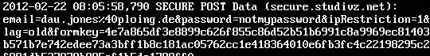

Verschlüsselung im Alltag
Stefan Schlott


 Sender und Empfänger benutzen gemeinsames Geheimnis
Sender und Empfänger benutzen gemeinsames Geheimnis
Typischerweise sehr performant
Problem: Austausch des Schlüssels
 Kryptographische Hashfunktion
Kryptographische Hashfunktion
Hashes: Verdichtung von Daten auf eine charakteristische (kurze) Sequenz
Besonderheit in der Kryptographie: Finden von Daten zu einem gegebenen Hashwert schwierig
Statt einem Schlüssel für Ver- und Entschlüsselung: Schlüsselpaare (heben Wirkung gegenseitig auf)
Verschlüssel-Schlüssel (Public Key) kann öffentlich sein
Problem: Habe ich wirklich den Schlüssel des gewünschten Empfängers?
SSL sorgt für das "Schloß im Browser"
Protokoll zur Authentisierung und Verschlüsselung von Datenverbindungen
...und mehr :-)
Lösung bei SSL: Certification Authorities (CAs)
Vertrauenswürdige Zertifizierungsstellen
Bestätigen von Identitäten oder Weitergabe der Verantwortung
Die Kette der Beteiligten:
 →
→
→
→
 →
→

Sicherheit fängt immer beim Benutzer an!
Verwenden der falschen Adresse:
Falsches Verhalten:
Eigener Rechner: Infektion mit Malware, Backdoor, ...
Zielrechner: Eindringen in das System
In beiden Fällen:
Malware im System kann...
Verbindung: Im LAN, Internet-Cafe, Router des ISPs, Proxy der Firma, ...
Man-in-the-Middle: Abhören und/oder manipulieren
sslstrip agiert als transparenter Proxy
Parst durchlaufende Daten
Ersetzt alle https-Links durch http
Bei vielen Websites sind alle Seiten sowohl per http als auch per https abrufbar
Folgt man nur den Links, gelangt man nun nie auf die verschlüsselte Seite
Ganz fatal bei eingebetteten Formularen
⇒ Wichtige URLs immer prüfen!
...und mit sslstrip:
